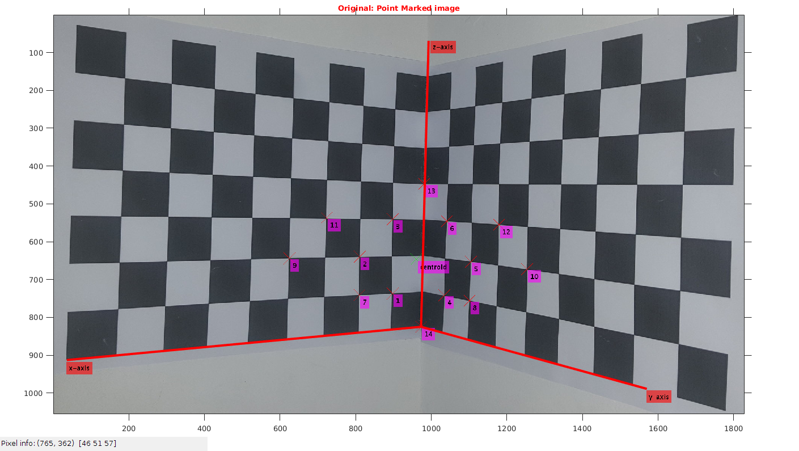
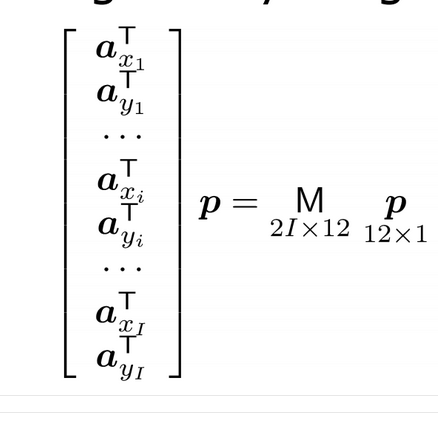
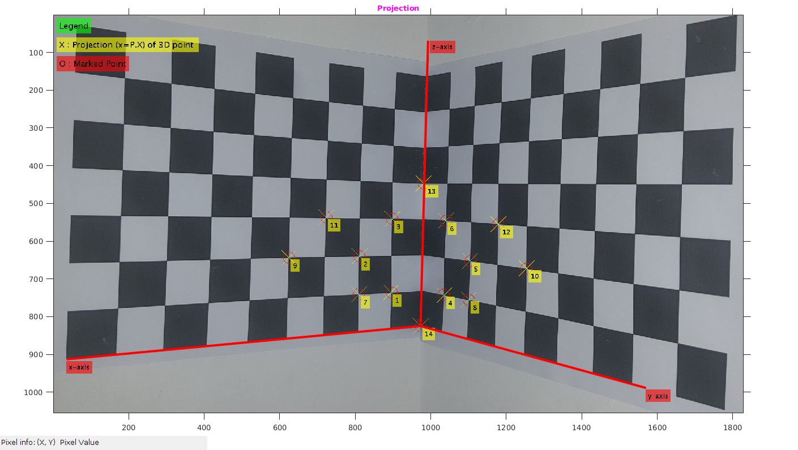

Assignment1-1
Rollno: 163059009, 16305R011, 16305R001
Contents
Init
file='../data/camR.jpg'; img=imread(file); dim=size(img); format shortG
0) Data Points
We have take 14 datapoints for our camera caliberation.
tic; %datatset : 14 points points3D_2=[1,0,1,1 ; %1 2,0,2,1 ; %2 1,0,3,1 ; %3 0,1,1,1 ; %4 0,2,2,1 ; %5 0,1,3,1 ; %6 2,0,1,1 ; %7 0,2,1,1 ; %8 4,0,2,1 ; %9 0,4,2,1 ; %10 3,0,3,1 ; %11 0,3,3,1 ; %12 0,0,4,1 ; %13 0,0,0,1 ; %14 ]; points2D_2=[737,898,1 ; %1 640,811,1 ; %2 541,898,1 ; %3 742,1034,1 ; %4 653,1105,1 ; %5 546,1041,1 ; %6 741,810,1 ; %7 756,1101,1 ; %8 644,625,1 ; %9 673,1253,1 ; %10 537,724,1 ; %11 555,1179,1 ; %12 447, 981,1 ; %13 825,973, 1 ; % 14 ]; points3D=points3D_2; points2D=points2D_2; noOfPoints=size(points2D,1);
1) Normalization
Here we are doing the normalization of 2D and 3D point. Normalization is such that distance of 2d and 3d from their respective origin is sqrt(2) and sqrt(3) respectively.
Why Normalization is good?
Normalization help in bringing all points in one unit. Say measure unit in 3d world is cm/feet/m/km and in 2d image its pixels. So we cannot compare cm/m/km etc with pixels. Normilization helps in bringing every datapoint to same unit of measure. After calcuations are done, we can scale it back to their respective unit.
[newpts2D, T2,c2d]=normalize2d(points2D); [newpts3D, T3,c3d]=normalize3d(points3D);
2D data point Marking
Showing the datapoints on image which are under observation. We have taken measurements for 14 datapoints.
img1=img; for i=1:noOfPoints img1 = insertMarker(img1,[points2D(i,2),points2D(i,1)],'x','color','red','size',15); img1= insertText(img1,[points2D(i,2)+3,points2D(i,1)+3], num2str(i), 'FontSize',18,'BoxColor', 'magenta'); end % Centroid img1 = insertMarker(img1,[c2d(2),c2d(1)],'x','color','green','size',15); img1= insertText(img1,[c2d(2)+5,c2d(1)+5], 'centroid', 'FontSize',18,'BoxColor', 'magenta'); % Adding Axis-label img1=insertText(img1,[993+5,69], 'z-axis', 'FontSize',18,'BoxColor', 'red'); img1=insertText(img1,[36,913 + 5], 'x-axis', 'FontSize',18,'BoxColor', 'red'); img1=insertText(img1,[1570,989 + 5], 'y-axis', 'FontSize',18,'BoxColor', 'red'); % Showing image figure('name','Original:Point Marked image'); imshow(img1); impixelinfo; title('\fontsize{10}{\color{red}Original: Point Marked image}'); axis tight,axis on; % Drawing 3d axis line([973,993], [825,69], 'Color', 'red', 'LineWidth', 3); line([973,36], [825,913], 'Color', 'red', 'LineWidth', 3); line([973,1570], [825,989], 'Color', 'red', 'LineWidth', 3);
Warning: Image is too big to fit on screen; displaying at 67%
2) Creating M matrix
Creating the M matrix of dimension 2Ix12 = 28x12 as I is 14

M=zeros(2*noOfPoints,12); for i=1:noOfPoints M(2*(i-1)+1,1:3)=-1.*newpts3D(i,1:3); M(2*(i-1)+1,4:8)=[-1,0,0,0,0]; M(2*(i-1)+1,9:11)=newpts2D(i,1).*newpts3D(i,1:3); M(2*(i-1)+1,12)=newpts2D(i,1); M(2*i,1:4)=[0,0,0,0]; M(2*i,5:7)=-1.*newpts3D(i,1:3); M(2*i,8)=-1; M(2*i,9:11)=newpts2D(i,2).*newpts3D(i,1:3); M(2*i,12)=newpts2D(i,2); end
3) Finding projection ~P
[U,S,V]=svd(M);
psol=V(:,12);
p=reshape(psol,[4,3])';
P=(inv(T2))*p*T3;
P=P./P(3,4);
fprintf('**Projection Matrix P:\n');
disp(P);
**Projection Matrix P:
-17.968 -16.696 -96.348 825.2
-106.4 21.23 -1.6118 972.86
-0.030451 -0.037805 -0.0037611 1
4) Finding Xo
HInfi=P(:,1:3); h=P(:,4); HInfiInv=inv(HInfi); %k=HInfi*HInfiInv; Xo=-HInfiInv*h; fprintf('**Intrinsic Param Xo:\n'); disp(Xo');
**Intrinsic Param Xo:
12.32 16.183 3.4628
5) Finding Rotation and Caliberation
[Rinv,Kinv] = qr(HInfiInv); R=Rinv'; K=inv(Kinv); K=K/K(3,3); fprintf('**Intrinsic K:\n'); disp(K); fprintf('**Rotation R:\n'); disp(R);
**Intrinsic K:
1935.6 26.599 649.91
0 1975.9 1030.7
0 0 1
**Rotation R:
-0.030055 -0.074953 0.99673
0.77971 -0.6257 -0.023541
0.62542 0.77646 0.077247
6) Finding the projection of 3d using "P3x4" matrix
For 14 points RMSE: 1.181891
projectedPtn=(P*points3D')';
projectedPtn=bsxfun(@times,projectedPtn,projectedPtn(:,3).^-1);
RMSE=sqrt(sum(sum((points2D-projectedPtn).^2,2))./noOfPoints);
fprintf('\n For %d points RMSE: %f\n',noOfPoints,RMSE);
For 14 points RMSE: 1.181891
6.1) Plotting projected point and actual points
Projected points are in yellow (marker: x) and actual points are in red (marker: o)
img1=img; for i=1:noOfPoints x=round(projectedPtn(i,1)); y=round(projectedPtn(i,2)); %fprintf('(x:%d,y:%d)',x,y); img1 = insertMarker(img1,[y,x],'x','color','yellow','size',20); img1 = insertMarker(img1,[points2D(i,2),points2D(i,1)],'o','color','red','size',15); img1=insertText(img1,[y+5,x+5], num2str(i), 'FontSize',18,'BoxColor', 'yellow'); end % Legend img1=insertText(img1,[10,10], 'Legend', 'FontSize',22,'BoxColor', 'green'); img1=insertText(img1,[10,60], 'X : Projection (x=P.X) of 3D point ', 'FontSize',22,'BoxColor', 'yellow'); img1=insertText(img1,[10,110], 'O : Marked Point', 'FontSize',22,'BoxColor', 'red'); % Adding Axis-label img1=insertText(img1,[993+5,69], 'z-axis', 'FontSize',18,'BoxColor', 'red'); img1=insertText(img1,[36,913 + 5], 'x-axis', 'FontSize',18,'BoxColor', 'red'); img1=insertText(img1,[1570,989 + 5], 'y-axis', 'FontSize',18,'BoxColor', 'red'); figure('name','Projection'); imshow(img1); impixelinfo; title('\fontsize{10}{\color{magenta}Projection}'); axis tight,axis on; % Drawing 3d axis line([973,993], [825,69], 'Color', 'red', 'LineWidth', 3); line([973,36], [825,913], 'Color', 'red', 'LineWidth', 3); line([973,1570], [825,989], 'Color', 'red', 'LineWidth', 3); toc;
Warning: Image is too big to fit on screen; displaying at 67% Elapsed time is 1.939319 seconds.